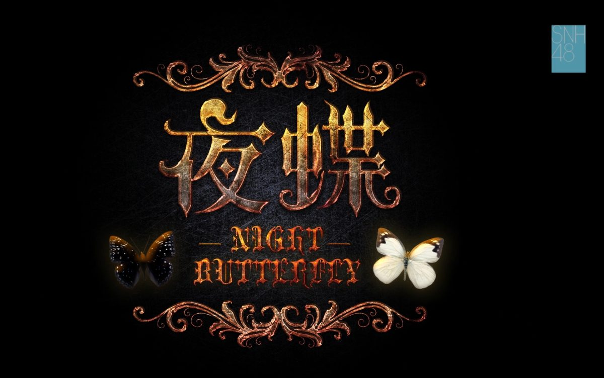
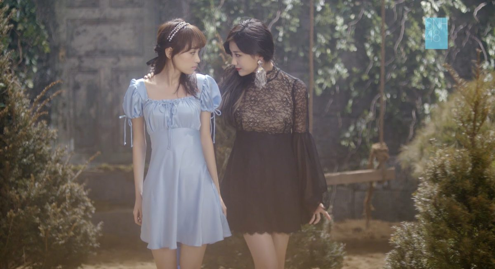
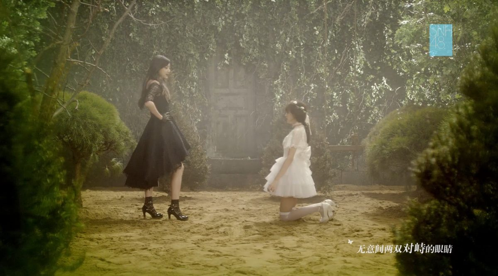
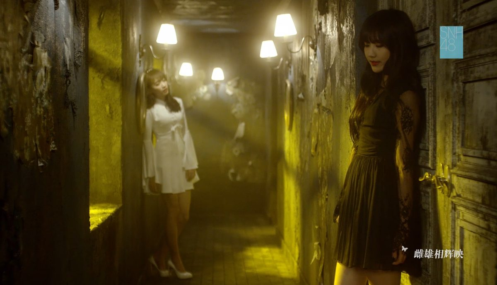
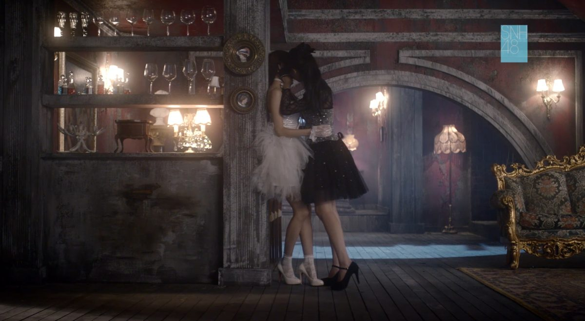
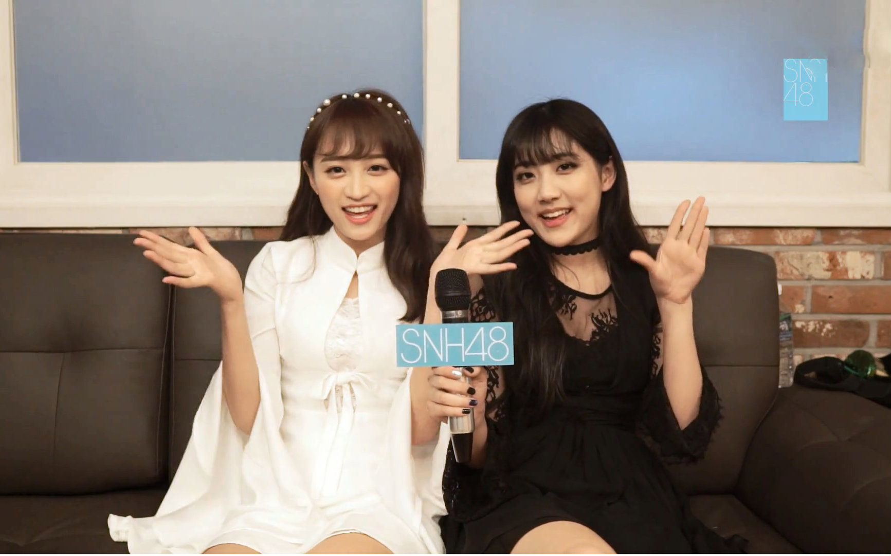
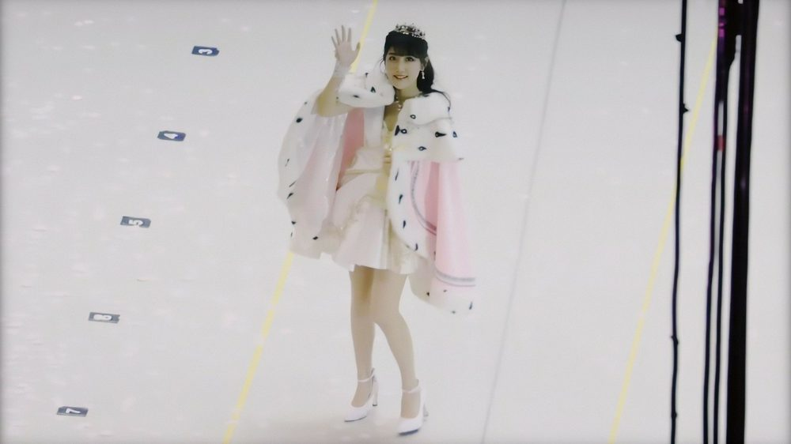
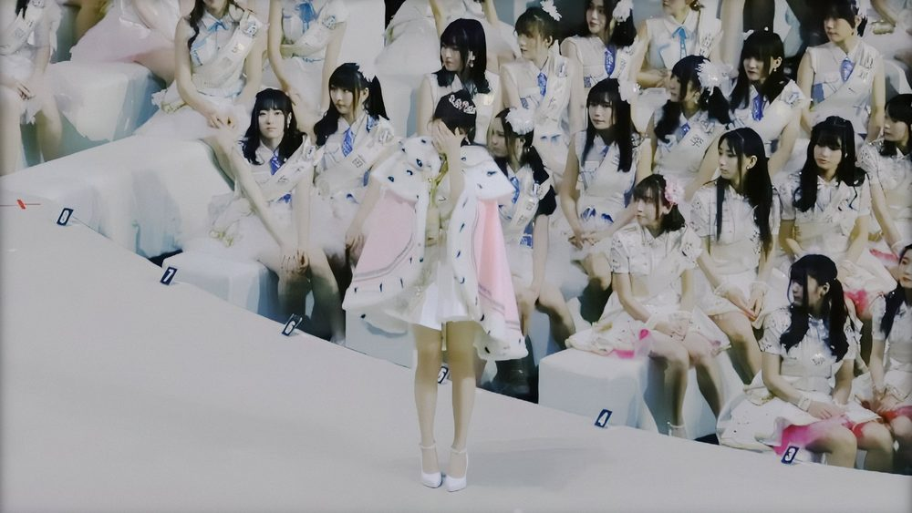
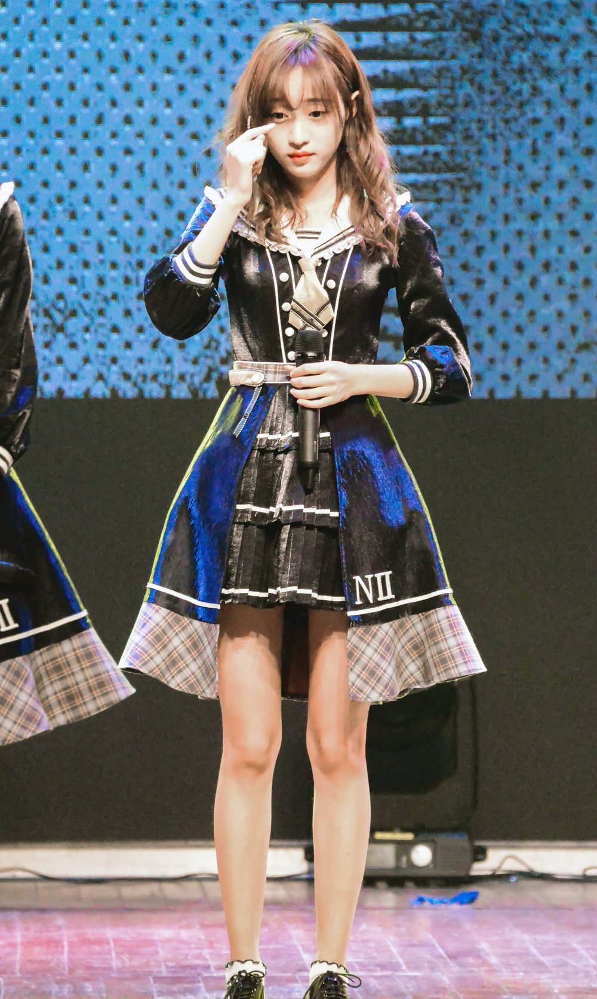

▶ PLAY · 黑白夜蝶 · CRT水银失真剧场
卡黄
黄婷婷 × 李艺彤
Love · Hate · Static · 2013—2026
滚轮 / 滑动 · 垂直磁吸章节
Team NII · CP 爆发前夜
2013，两人同属 SNH48 Team NII。舞台同框、综艺互动，粉丝开始捕捉「卡黄」化学反应。
2014，CP 讨论升温 —— 站位、眼神、握手，都被剪进同人视频。黑白夜蝶的翅膀，还没张开。



图源：SNH48 官网新闻图 · 维基共享
《夜蝶》金曲 · 顶点与裂缝
▶ 夜蝶 · LYRIC MODE（点击行高亮）
2015.1.31 请求公演，《夜蝶》拿下金曲。卡黄站在聚光灯最亮处 —— 也是后来许多粉丝回望时，认定「最好看也最痛」的一夜。
同一天的暗线：131 取关冷战，即将写入下一章。

131 · 取关 · 冷战开机
CLIP 流传「婷婷桑的笑颜……」
— 李艺彤（片段流传，非官网确认）
FLAG · 事件节点131 前后社媒取关 · 公开互动断崖
— 粉丝时间线共识（非官方声明）
金曲夜的余温还没散尽，关系线突然静音。韩综 / MV 行程里两人仍可能同框，但「卡黄」作为公开 CP 叙事，开始进入噪点区。
点击上方引言 → 双 CRT 失同步 特效。


《爱恨的泪》冷舞台 · 应援会散场
2017，《爱恨的泪》舞台被许多观众形容为「礼貌而疏远」—— 动作对齐，眼神错开。
同年，相关 CP 应援会解散。粉丝侧的「官方叙事」熄灭，只剩私密剪辑在硬盘里循环。
CLIP 流传「炸成烟花」
— 李艺彤直播相关表述（流传版本）
CLIP 流传取关黄婷婷 · 衬衫梗
— 直播/社交片段流传（请自行核对原档）

拒唱《人鱼》· 冷舞台 · 总选榜
2017.12 直播：拒绝《人鱼》相关请求的流传版本，与「炸成烟花」一并被剪进无数混剪。
2018，《人鱼》冷舞台；总选赛道上一人冠军、一人第二 —— 聚光灯并排，关系线仍静音。
朋友圈互怼截图在饭圈流传（截图流传，非双方官方完整语境）。
CLIP 流传「挺幼稚的」 / 「体面」 / 排名式友谊隐喻
— 黄婷婷侧后期表述（流传，未经完整官方确认请谨慎引用）


毕业 · 诉讼余波 · 多年静默
2019，李艺彤毕业；黄婷婷侧有诉讼相关公开信息进入新闻周期。两人公开同框与互动进入长静默。
2024—2026：饭圈仍在流传旧片段与「复合」剪辑（CLIP 流传），无经核实的公开和解。
截至 2026-10
无公开和解
你怎么看卡黄结局？（本地投票，不上传）
END OF TAPE
两台 CRT，两种磷光。
同队、金曲、取关、冷舞台、静默 —— 都录在这卷带上。
截至 2026-10
无公开和解